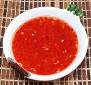

|
Sweet and Sour Dipping SaucePhilippine | ||||
| Makes: Effort: Sched: DoAhead: |
1 cup * 10 min Yes |
This dip is only mildly sweet, just enough to take the harsh edge off the vinegar. It is used for spring rolls, fried fish and shrimp, and the like. | |||
|
1 2 1 1 1 1 1 1 |
c cl t t T t T |
Vinegar (1) Garlic Red Chili (2) Sugar Cornstarch Water Salt Ketchup (3) |
Make - (10 min)
|